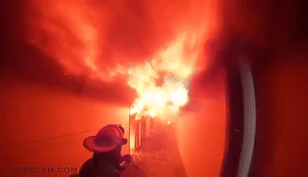
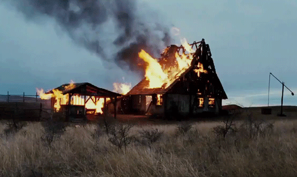
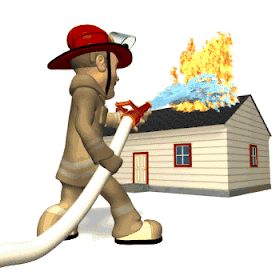
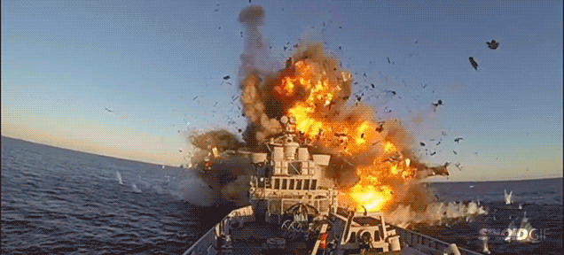
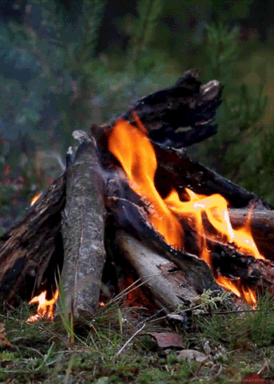
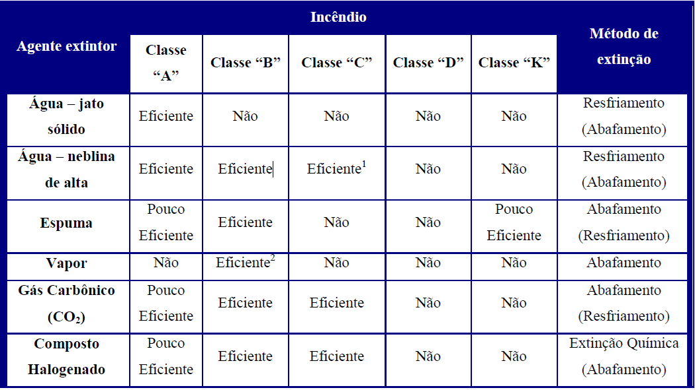
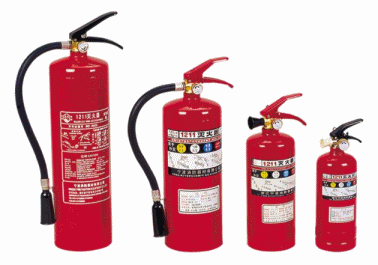

Fogo - Desenvolvimento simultâneo de calor e luz, que é produto da combustão de matérias inflamáveis, como, por exemplo, a madeira, o carvão e o gás.
Incêndio - Fogo que lavra com intensidade, causando destruição e, às vezes, prejuízos.
2.2 - A DINÂMICA DO INCÊNDIO
Os incêndios podem ser separados em quatro diferentes estágios:
Fase inicial;
Fase de desenvolvimento;
Incêndio desenvolvido; e
Fase de queda de intensidade.
2.2.1 - Fase Inicial
A temperatura média do compartimento aindanão está muito elevada, e o fogo está localizado próximo ao foco do incêndio (Fig. 2.1).
Fig. 2.1 - Incêndio na fase inicial

Caso não ocorra a extinção do incêndio, poderá ocorrer o “rollover”, também conhecido como lean flashover (Fig. 2.2), que é o fenômeno no qual os gases da combustão não queimados no incêndio misturam-se ao ar e se inflamam na parte superior do compartimento, devido à alta temperatura naquela área (são bolas de fogo que se formam na parte superior do compartimento).
As altas temperaturas concentram-se próximas ao foco do incêndio, e a fumaça proveniente da combustão forma uma camada quente na parte superior do compartimento.
OSTENSIVO
CAAML-1202
Fig. 2.2 - Aparecimento de um "rollover"
2.2.2 - Fase de Desenvolvimento
É a fase de transição entre a fase inicial e a do incêndio totalmente desenvolvido.
Ocorre em um período relativamente curto de tempo e pode ser considerada um evento do incêndio (combustão súbita generalizada).
Trata-se do momento no qual a temperatura da camada superior de fumaça atinge temperaturas em torno de 600ºC.
A característica principal desta fase é o repentino espalhamento das chamas a todo o material combustível existente no compartimento.
Este fenômeno, conhecido pelo nome de "flashover" (Fig. 2.3), é um dos principais causadores de acidentes graves com o pessoal envolvido no combate ao incêndio.
Fig. 2.3 - Surgimento de um "flashover"
A teoria do “flashover” foi elaborada pelo cientista britânico P.H. Thomas, nos anos 60, e foi usada para descrever o crescimento do incêndio até o ponto onde se torna um incêndio totalmente desenvolvido.
A partir do aparecimento do “flashover”, entra-se na fase de incêndio desenvolvido (Fig. 2.4).
OSTENSIVO
CAAML-1202
Fig. 2.4 – As fases do incêndio e o "Flashover"
2.2.3 - Incêndio Desenvolvido

Todo o material do compartimento está em combustão, sendo a taxa de queima limitada pela quantidade de oxigênio remanescente.
A sobrevivência do pessoal que estiver no local é improvável.
Chamas podem sair por qualquer abertura, e os gases combustíveis existentes na fumaça se queimam assim que encontram ar fresco.
O acesso a esse incêndio é praticamente impossível, sendo necessário um ataque indireto ao mesmo.
Incêndios em praças de máquinas ou provocados pelo impacto de armamento inimigo atingem este estágio rapidamente.
2.2.4 - Fase de queda de intensidade e “backdraft”
Quase todo o material combustível já foi consumido e o incêndio começa a se extinguir.
Após a extinção do incêndio, em casos específicos, pode ocorrer o fenômeno do reaparecimento.
Em um incêndio que tenha se extinguido por ausência de oxigênio, como por exemplo, em um compartimento estanque que tenha sido completamente isolado, vapores combustíveis podem estar presentes.
Quando ar fresco for admitido nessa atmosfera rica em vapores combustíveis e gases explosivos e com temperatura próxima à de ignição, os três elementos do triângulo do fogo estarão novamente presentes e poderá ocorrer uma ignição explosiva, fenômeno também conhecido por “backdraft” ou “backdraught” (Fig. 2.5).
OSTENSIVO
CAAML-1202
Fig. 2.5 - Apresentação de um "backdraft" na fase de queda de intensidade
As condições a seguir podem indicar uma situação de “Backdraft”:
Fumaça sob pressão, num ambiente fechado;
Fumaça escura, tornando-se densa, mudando de cor (cinza e amarelada) e saindo do ambiente em forma de lufadas;
Calor excessivo (nota-se pela temperatura na porta);
Pequenas chamas ou inexistência destas em ambientes fechados onde houve um incêndio;
Resíduos da fumaça impregnando o vidro das janelas;
Pouco ruído em ambientes fechados onde houve um incêndio;
Movimento de ar para o interior do ambiente quando alguma abertura é feita (em alguns casos ouve-se o ar assoviando ao passar pelas frestas).
2.3 - PRINCIPAIS CAUSAS DE INCÊNDIO

Podemos afirmar, com segurança, que o mais eficiente método de combater incêndiosé evitar que eles tenham início.

Excetuados, evidentemente, os incêndios originados por danos em combate, a grande maioria de ocorrências de incêndios é derivada de falhas humanas, pela não observância dos cuidados na utilização do material, pela manutenção deficiente dos equipamentos e pelo desconhecimento das precauções de segurança.
OSTENSIVO
CAAML-1202
As principais causas de incêndios a bordo de navios, são as seguintes:
Cigarros e fósforos atirados em locais impróprios;
Trapos e estopas embebidos em óleo ou graxa;
Acúmulo de gordura nas telas e dutos de extração da cozinha;
Serviços com equipamento de solda elétrica ou oxiacetileno;
Não observância de todos os compartimentos adjacentes aos que estão sendo realizados serviços de corte ou solda;
Equipamentos elétricos ligados, desnecessariamente, por período de tempo considerável;
Materiais inflamáveis ou combustíveis de bordo, tais como óleos, graxas, tintas, solventes etc., armazenados indevidamente;
Presença de vazamentos em sistemas de óleo combustível e lubrificante;
Presença de óleo combustível ou lubrificante em isolamento térmico de descargas de motores;
Partes aquecidas de máquinas próximas a redes de óleo;
Uso de ferramentas manuais ou elétricas em tanques não devidamente desgaseificados, ou nos compartimentos adjacentes a esses tanques;
Fritadores elétricos superaquecidos;
Lâmpadas sem proteção.
2.4 - MÉTODOS DE EXTINÇÃO DE INCÊNDIOS
2.4.1 - Abafamento
O primeiro método básico de extinção de incêndios é o abafamento, que consiste em
reduzir a quantidade de oxigênio abaixo do limite de 13% (Fig. 2.6).
OSTENSIVO
CAAML-1202
Fig. 2.6 - Retirada do comburente
Não havendo comburente para reagir com o combustível, não haverá fogo. Como exceções, estão os materiais que têm oxigênio em sua composição e queimam sem necessidade do oxigênio do ar, como os peróxidos orgânicos e o fósforo branco.
Conforme já vimos anteriormente, a diminuição do oxigênio em contato com o combustível vai tornando a combustão mais lenta, até a concentração de oxigênio chegar próxima de8%, quando não haverá mais combustão. Colocar uma tampa sobre um recipiente contendo álcool em chamas, ou colocar um copo voltado de boca para baixo sobre uma vela acesa, são duas experiências práticas que mostram que o fogo se apagará tão logo se esgote o oxigênio em contato com o combustível.
Pode-se abafar o fogo com uso de materiais diversos, como areia, terra, cobertores, vapor d’água, espumas, pós, gases especiais etc. (Figs. 2.6-A, 2.6-B e 2.6-C).
É o método mais antigo de se apagar incêndios, sendo seu agente universal a água.
Consiste em reduzirmos a temperatura de um combustível, ou da região onde seus gases estão concentrados, abaixo da temperatura de ignição, extinguindo o fogo.
Raciocinando com o triângulo do fogo, isto consiste em afastar o lado referente à temperatura de ignição.
Com apenas dois lados (combustível e comburente), não há fogo.
Cabe ressaltar que somente por resfriamento podem ser extintos os incêndios de combustíveis que tenham comburente em sua estrutura íntima (pólvora, celulóide etc.). Esses incêndios não podem ser extintos por abafamento (Fig. 2.8).
Consiste na retirada do combustível, o que geralmente é utilizado quando não dispomos
de equipamentos adequados para combater o incêndio. Como exemplo, podemos citar o
fechamento de uma válvula de gás ou retirada de material inflamável das proximidades de um foco de incêndio (Fig. 2.9).
Alguns manuais consideram a retirada do material como um método de extinção, porém
consideraremos apenas como uma etapa do processo de extinção, haja vista que se baseia na retirada do material combustível.
Fig. 2.9 - Retirada do combustível
2.4.4 - Quebra da reação em cadeia
Processo de extinção de incêndios em que determinadas substâncias são introduzidas na
reação química da combustão, com o propósito de inibi-la.
Neste caso é criada uma condição especial (por um agente que atua em nível molecular) em que o combustível e o comburente perdem, ou têm em muito reduzida, a capacidade de manter a reação em cadeia.
A reação só permanece interrompida enquanto houver a efetiva presença do agente extintor, que deverá ser mantido até o resfriamento da área, natural ou por um dos meios conhecidos.
Um dos agentes extintores por quebra da reação em cadeia mais conhecido na Marinha do Brasil é ohalon, que é um agente extintor de compostos químicos formados por elementos halogênios (flúor, cloro, bromo e iodo), porém, sua fabricação foi banida pelo Protocolo de Montreal, por ser nocivo à camada de ozônio. De acordo com o próprio Protocolo, seu uso é permitido para fins militares e extinção de incêndio em Navios.
2.5 - CLASSIFICAÇÃO DOS INCÊNDIOS
A Associação Brasileira de Normas Técnica – ABNT, por meio da NBR 12693,
classifica os incêndios de acordo com os materiais neles envolvidos. Essa classificação é feita para
determinar os agentes extintores adequados para cada tipo de incêndio.
OSTENSIVO
CAAML-1202
2.5.1 - Incêndio classe “A”
São os que se verificam em materiais fibrosos ou sólidos, que formam brasas e deixam
resíduos. São os incêndios em madeira, papel, tecidos, borracha e na maioria dos plásticos
(Fig. 2.10).

Fig. 2.10 - Incêndio classe A – madeira
Método de extinção:
Necessita de resfriamento para a sua extinção, isto é, do uso de água ou soluções que a contenham em grande porcentagem, a fim de reduzir a temperatura do material em combustão abaixo do seu ponto de ignição (Fig. 2.11).
O emprego de pó químico irá apenas retardar a combustão, não agindo na queima em profundidade.
Fig. 2.11 - Uso de água para extinção de incêndio classe A
OSTENSIVO
CAAML-1202
2.5.2 - Incêndio classe “B”
São os que se verificam em líquidos inflamáveis (óleo, querosene, gasolina, tintas,
álcool etc.) e também em graxas e gases inflamáveis (Fig. 2.12).
Fig. 2.12 - Incêndio classe B - líquido combustível
Método de extinção:
Necessita para a sua extinção do abafamento ou quebra da reação em cadeia. No caso
de líquidos muito aquecidos (acima do ponto de ignição), é necessário também resfriamento
(Fig. 2.13).
Fig. 2.13 - Extinção de incêndio classe B com uso de espuma
2.5.3 - Incêndio classe “C”
São os que se verificam em equipamentos e instalações elétricas, enquanto a energia
estiver alimentada, como, por exemplo, um motor elétrico ligado (Fig. 2.14).
OSTENSIVO
CAAML-1202
Fig. 2.14 - Incêndio classe C - equipamentos elétricos
Método de extinção:
Necessita para a sua extinção do abafamento ou quebra da reação em cadeia. No caso
de líquidos muito aquecidos (acima do ponto de ignição), é necessário também resfriamento
(Fig. 2.13).
Fig. 2.13 - Extinção de incêndio classe B com uso de espuma
2.5.4 - Incêndio classe “D”
São os que se verificam em metais como lítio e cádmio (em baterias), magnésio (em
motores), selênio, antimônio, potássio, alumínio fragmentado, zinco, titânio, sódio e zircônio.
São exemplos de metais combustíveis. É caracterizado pela queima em altas temperaturas e
por reagir com extintores comuns (principalmente os que contenham água).
Método de extinção:
Para a sua extinção, são necessários agentes extintores especiais (pós químicos
especiais) que se fundem em contato com o metal combustível, formando uma espécie de
capa que o isola do ar atmosférico, interrompendo a combustão pelo princípio de abafamento.
Os pós químicos especiais são compostos dos seguintes materiais: cloreto de sódio,
cloreto de bário, monofosfato de amônia, grafite seco (Fig. 2.8).
OSTENSIVO
CAAML-1202
2.5.5 - Incêndio classe “K”
São os que se verificam em gordura animal, vegetal e têm sido por muito tempo a principal causa de incêndios em cozinhas. A natureza específica desses incêndios é diferente da maior parte dos outros incêndios, mesmo aqueles que envolvem outros líquidos inflamáveis como gasolina, óleo combustível e lubrificante.
Nos Estados Unidos esta nova classe de incêndio foi reconhecida pela NFPA (National Fire Protection Association), através da norma NFPA 10.
Os óleos de cozinha usados para fritura têm uma faixa ampla de temperaturas de autoignição, que pode ocorrer em qualquer intervalo de 288°C a 385°C.
Depois de ocorrida a autoignição, o óleo mudará ligeiramente sua composição ao queimar-se, tornando a nova temperatura de autoignição mais baixa que a original. Com isso o incêndio tornar-se-á autossustentável, a menos que a massa inteira de óleo seja resfriada a uma temperatura abaixo desta nova.
Método de extinção:
O agente extintor ideal é o Pó Químico Umedecido, que consiste numa solução de água com Acetato de Potássio, Carbonato de Potássio, Citrato de Potássio ou uma combinação destes compostos.
A água da composição tem a função de resfriamento do produto, permitindo que a temperatura permaneça abaixo do ponto de autoignição. Enquanto isso, através de uma reação de saponificação dos agentes extintores (C2H3KO2; NaHCO3; C6H5K3O7) com o produto, ocorre a formação de uma camada superficial de espuma que impede o contato do óleo com o oxigênio do ar.
2.6 - MEDIDAS PREVENTIVAS
Considerando-se que, na prática, a eclosão de um incêndio a bordo não pode ser definitivamente impedida, especialmente em situações de guerra, é necessário que se adotem providências não só de prevenção de incêndios, mas também aquelas que venham a atenuá-lo, quando ele for inevitável.
Algumas dessas providências fazem parte das próprias normas de construção naval, enquanto outras se fazem intimamente ligadas à doutrina do Controle de Avarias – CAv, cabendo ao pessoal de bordo zelar pelo seu cumprimento. A manutenção da doutrina do CAv, inclusive a detecção e correção de irregularidades observadas que venham a apresentar riscos de incêndios a bordo é de responsabilidade de todos a bordo, cabendo ao Encarregado do CAv, sua supervisão, com a ajuda dos Encarregados das Divisões, Fiel de CAv do Navio, Fiéis de CAv das Divisões e do pessoal de serviço.
OSTENSIVO
CAAML-1202
Uma adequada prevenção de incêndio deve incluir, conforme já visto, a limitação da presença de materiais combustíveis a bordo, bem como o controle daqueles que podem ser introduzidos para o atendimento de determinadas conveniências ou exigências do serviço, observadas ainda as situações de guerra e de paz.
As providências de prevenção e limitação de incêndios a bordo, no que diz respeito ao material inflamável, abordadas nas diversas publicações de Controle de Avarias, podem, então, ser resumidas em cinco aspectos básicos:
2.6.1 - Eliminação do material desnecessário à operação militar do navio
O navio deve ter conhecimento dos riscos existentes decorrentes da existência desse material e de material estranho a bordo, sua localização e as medidas especiais, se necessário, a serem tomadas caso ocorra alguma avaria, confeccionando, para tal, uma Tabela de Inflamáveis. Todo material introduzido a bordo deve ser relacionado e a sua localização informada ao Encarregado do Controle de Avarias – EncCAv.
A faina de preparar o navio para o combate deve prever a utilização dessa Tabela de Inflamáveis, para que sejam removidos de bordo, ou sejam reduzidas as suas quantidades.
2.6.2 - Especificação do material de bordo
O projeto das unidades navais deve prever a mínima utilização de equipamentos e acessórios compostos por materiais combustíveis.
2.6.3 - Armazenamento e proteção do material combustível
Não armazenar, se possível, material combustível acima da linha d’água, inclusive no convés principal.
Quando não puder ser evitado o armazenamento de material combustível no convés principal ou na superestrutura, o mesmo deverá ser acondicionado e posicionado de forma que possa ser lançado facilmente ao mar. Deverá, também, ficar localizado o mais a ré possível, a fim de que a fumaça e as chamas, no caso de incêndio, não venham a interferir com a manobra do navio.
É essencial que não seja deixado nenhum combustível volátil nas proximidades das aspirações dos compartimentos internos do navio.
Os locais adequados para armazenar material combustível são os compartimentos localizados abaixo da linha d’água. Para aumentar a proteção devem ser usados compartimentos localizados junto ao casco e o material deverá ser armazenado afastado das anteparas, para evitar o perigo de calor irradiado no caso de incêndio no compartimento adjacente.
OSTENSIVO
CAAML-1202
Todos os combustíveis líquidos, particularmente aqueles que desprendem vapores altamente inflamáveis ou explosivos, devem ser guardados em recipientes próprios com tampa hermética.
A armazenagem de líquidos inflamáveis tais como tintas, vernizes, óleos e graxas deve ser feita em compartimento apropriado, com ventilação forçada.
A armazenagem de materiais nos dutos de descarga de gases de Praças de Máquinas deve ser proibida.
Deve-se ter especial atenção ao material dos invólucros de sobressalentes, geralmente feitos de material combustível. Assim que possível, estes sobressalentes devem ser desempacotados para serem armazenados e os invólucros jogados fora.
2.6.4 - Limitação da quantidade de materiais inflamáveis ao mínimo necessário à operação em vista
Essa limitação será mais fácil de ser planejada em tempo de paz, quando a duração de cada comissão pode ser estimada com rigor.
2.6.5 - Manutenção do navio nas suas melhores condições de resistência ao fogo
Pode ser alcançada por meio da realização de frequentes inspeções, de modo a manter os riscos de incêndio reduzidos ao mínimo, e da contínua conscientização da tripulação quanto à necessidade de manter o navio seguro, o que é alcançado através do adestramento individual, por equipes e para os quartos de serviço, e de notas em Plano de Dia.
2.7 - Redução de riscos de incêndio nas Praças de Máquinas
São apresentadas abaixo algumas ações a executar e metas a serem atingidas de modo a se eliminar ou reduzir os riscos de incêndio nas Praças de Máquinas, através da eliminação ou contenção de pequenos vazamentos, manuseio de combustíveis, realização de adestramentos etc.:
- inspecionar frequentemente os sistemas de recebimento, armazenamento e transferência de óleos combustíveis e lubrificantes quanto a vazamentos, incluindo seus flanges, válvulas, elipses e demais itens;
- estabelecer normas de segurança para o manuseio de óleos combustíveis (diesel ou de aviação) quando retirados do sistema em que trabalham;
- testar e inspecionar os sistemas que envolvem inflamáveis, após reparos;
- doutrinar, educar e treinar todo o pessoal para a redução dos riscos de incêndio, realizando adestramentos de procedimentos do pessoal após detecção de vazamentos e no combate a um princípio de incêndio em praça de máquinas, ainda na fase de avaria operacional, assim como promovendo frequentes exercícios de combate a incêndio em praça de máquinas para todo o navio;
- incentivar todas as práticas de prevenção a incêndios, como:
OSTENSIVO
CAAML-1202
1) Inspeção visual de todos os sistemas que trabalham com inflamáveis, nas rotinas de pré-acendimento ou após longos períodos sem utilização;
2) Manutenção e fechamento de todas as tampas dos tubos de sondagem e redes de amostragem, suas respectivas válvulas e bujões de drenagem dos tanques de óleos;
3) Parada e reparo imediato de qualquer vazamento de óleo;
4) Limpeza constante de qualquer pequeno vazamento de óleo que não puder ser sanado imediatamente;
5) Manutenção da limpeza de dutos de ventilação e extração quanto a resíduos de óleo;
6) Manutenção rigorosa da limpeza dos porões quanto a qualquer vestígio de óleo, trapos embebidos em óleo ou lixo;
7) Não utilização dos compartimentos de acesso a chaminés como depósitos;
8) Depósito de óleos contaminados em tanques existentes para este fim;
9) Manutenção rigorosa do material de CAv; e
10) Manutenção rigorosa dos acessórios estanques das praças de máquinas.
2.8 - Perigos adicionais com o navio em período de reparo
São apresentadas abaixo situações ou fainas que apresentam risco de incêndio ou explosão a bordo, por ocasião do período de manutenção de um navio:
grande quantidade de fainas de corte e solda simultâneas e falta de controle e supervisão durante esse tipo de serviço;
numerosos painéis energizados e cabos elétricos com muitas emendas;
existência de grande quantidade de pessoal estranho a bordo;
grande quantidade de acessórios de CAv retirados, afetando a estanqueidade do navio, prejudicando o estabelecimento da condição de fechamento de material, em decorrência a limitação de avarias, e permitindo o espalhamento da fumaça;
guarnição reduzida a bordo e interrupção de comunicações interiores, com consequente demora na disseminação de um alarme geral; e
rede de incêndio, sistemas de esgoto, comandos à distância, sistemas fixos de extinção de incêndio em reparo ou operando com restrições.
OSTENSIVO
CAAML-1202
2.9 - Perigos adicionais quando em combate
São apresentadas abaixo situações ou fainas que aumentam o risco de incêndio ou explosão a bordo e a intensidade dos danos sofridos, por ocasião do navio em combate:
ondas de calor e deslocamento de ar devido às explosões externas e internas;
estilhaços aquecidos;
alagamentos progressivos, com grande quantidade de óleo combustível entrando em contato com as superfícies aquecidas;
centelhas de equipamentos elétricos avariados;
rompimento de trechos de redes de sistemas vitais;
baixas de pessoal, prejudicando o guarnecimento dos Reparos de CAv; e
interrupção momentânea ou permanente de energia elétrica e/ou comunicações, em parte ou em todo o navio.
OSTENSIVO
CAAML-1202
CAPÍTULO 3
AGENTES EXTINTORES
3.1 - Definição
Agente extintor é qualquer material empregado para resfriar, abafar as chamas ou quebrar a reação em cadeia, oriundas de uma combustão, proporcionando sua extinção.
Os agentes extintores de uso mais difundido a bordo são a água, a espuma, o vapor, o CO2, os compostos halogenados, o pó químico e a solução aquosa de carbonato de potássio (APC), porém existem outros, como o pó químico ABC.
3.2 - Água
Aplicação:
Agente extintor de uso mais comum, é aplicada nas formas de jato sólido e neblina de alta velocidade. Atua principalmente por resfriamento, devido à sua propriedade de absorver grande quantidade de calor, podendo atuar também, quando em forma de vapor, por abafamento. O jato sólido (Fig. 3.1) consiste em um jorro de água, lançado em alta pressão por meio de um esguicho com orifício circular de descarga. Sob esta forma, a água atinge o material incendiado com violência e penetra em seu interior. É o meio por excelência para a extinção de incêndios classe “A”, onde o material tem de ser bem encharcado de água para garantir a extinção total do fogo e impedir seu ressurgimento.
Fig. 3.1 – Jato sólido
Em alguns casos, como incêndios em colchões e travesseiros, é conveniente que o material seja mergulhado na água, garantindo-se assim que não permaneçam brasas no seu interior.
A água, aplicada sob a forma de gotículas, tem aumentada, em muito, sua superfície de contato com o material incendiado, propiciando um rápido decréscimo da temperatura no ambiente em que ocorre o fogo (extinção por resfriamento). A neblina de alta (Fig. 3.2) pode ser utilizada para auxiliar a extinção de incêndios classe “A”, reduzindo as chamas superficiais e permitindo que as equipes se aproximem mais do foco do incêndio, o que facilitará sua extinção definitiva com jato sólido. Na ausência de espuma, também é altamente eficiente na extinção de incêndios classe “B”, onde a aplicação de jato sólido provocaria um turbilhonamento no seio do líquido inflamado, aumentando o vulto do incêndio.
Fig. 3.2 - Neblina de alta velocidade.bmp
A água, sob qualquer das três formas em que é empregada, extingue incêndios por resfriamento, isto é, diminuindo a temperatura das substâncias abaixo de sua temperatura de ignição. No entanto, quando se joga água sobre uma substância em combustão, parte desta água se transforma em vapor, que tem uma ação de abafamento. Dizemos, então, que a água extingue incêndios principalmente por resfriamento e, secundariamente, por abafamento.
Cuidados
Todos os agentes extintores apresentam efeitos secundários sobre o material ou sobre o pessoal, requerendo cuidados adicionais para sua seleção e emprego, a fim de evitar-se que ocorram acidentes ou que o material venha a sofrer danos maiores do que aqueles que tenham sido causados pela ação do fogo.
– A água, especialmente a água salgada, é boa condutora de eletricidade e não deve, portanto, ser utilizada na extinção de incêndios em equipamentos energizados (classe “C”). No entanto, na total ausência de agentes extintores adequados, poderá ser aplicada na forma de neblina de alta velocidade, devendo ser mantida pelo utilizador uma distância de, pelo menos, dois metros dos equipamentos energizados, a fim de diminuir o risco de choque elétrico.
– Requer providências efetivas quanto ao esgoto. Fainas prolongadas podem causar a redução da reserva de flutuabilidade, por excesso de peso da água embarcada, bem como dar origem à formação de superfície livre, banda permanente ou redução de estabilidade por acréscimo de peso alto.
– Quando utilizada em jato sólido, pode avariar equipamentos frágeis, como equipamentos eletrônicos.
– Reduz a resistência de isolamento de equipamentos e circuitos, principalmente em se tratando de água salgada.
– Pode originar acidentes se, sob a forma de jato sólido, for dirigida sobre o pessoal à curta distância, principalmente se atingir o rosto.
3.3 - ESPUMA
Aplicação – É um agente extintor aplicado preferencialmente em incêndios classe “B”, podendo ser também utilizada em incêndios classe “A”. Usa-se a espuma mecânica, que é a espuma produzida pelo batimento da água, LGE (líquido gerador de espuma) e ar, através do princípio de Venturi. A espuma mecânica atua flutuando sobre a superfície do líquido inflamado e isolando-o da atmosfera (Fig. 3.3).
Fig. 3.3 - Eficiência da aplicação de espuma
Espuma Mecânica – Empregada para produção de grandes volumes de espuma por meio de equipamentos que misturam proporcionalmente o líquido gerador com ar e água. A água representa aproximadamente 85% (em peso) da composição da espuma, tendo um efeito secundário na extinção do incêndio. Concluímos então que a espuma extingue o incêndio principalmente por abafamento e, secundariamente, por resfriamento.
Cuidados
– Sendo condutora de eletricidade, pode causar acidentes se utilizada contra equipamentos elétricos energizados.
– Reduz a resistência de isolamento de equipamentos e circuitos elétricos e eletrônicos.
– Alguns tipos possuem propriedades corrosivas sobre diversos materiais.
– Produz irritação na pele e, principalmente, nos olhos.
3.4 - VAPOR
Aplicação
O vapor de água pode ser utilizado como agente extintor, por abafamento. Evidentemente, por sua temperatura normalmente elevada, não tem nenhuma ação de resfriamento.
Usa-se o vapor para extinguir incêndios classe “B”, principalmente em porões de praças de caldeiras, tanques de carga e praças de máquinas de navios a vapor, quando esses incêndios se mostram insensíveis a outros métodos. O uso de vapor obriga ao isolamento do compartimento, que fica inoperante.
Cuidados
– Requer a retirada de todo o pessoal do compartimento.
– Submete todos os equipamentos contidos no compartimento a uma temperatura elevada.
3.5 - GÁS CARBÔNICO
Aplicação
O gás carbônico é um gás inerte que não alimenta a combustão, agindo na redução do comburente (oxigênio) a níveis abaixo de 16%, sendo empregado como agente extintor por abafamento, criando, ao redor do corpo em chamas, uma atmosfera pobre em oxigênio.
É especialmente indicado para incêndios classe “C”, por ser um mau condutor de eletricidade. O CO2 é amplamente utilizado em extintores portáteis, sendo empregado em incêndios das classes “B” e “C”.
O CO2 é um agente limpo, que pode ser configurado com sistemas de alta ou baixa pressão. O sistema de baixa pressão é recomendado para aplicações onde são necessárias grandes quantidades de CO2. O sistema de alta pressão é recomendado para perigos menores ou espaços limitados.
Cuidados
– Pode causar acidentes por asfixia quando utilizado em ambientes fechados e sem ventilação.
– Pode causar queimaduras na pele e principalmente nos olhos, se dirigido à curta distância sobre o pessoal.
– A descarga das ampolas de CO2 pode dar origem à formação de cargas de eletricidade estática. Não é indicada, portanto, a utilização das ampolas de CO2 para saturação de ambientes onde existam misturas inflamáveis, mas apenas para combate a incêndios já em evolução.
3.6 - COMPOSTOS HALOGENADOS
Aplicação
Os compostos halogenados são utilizados atualmente apenas em sistemas fixos. O mais conhecido e utilizado na Marinha do Brasil é o halon. O Protocolo de Montreal (16/09/87) identificou o halon como uma das numerosas combinações que requerem limitações de uso e produção, devido a sua implicação na destruição da camada de ozônio. Uma emenda no Protocolo original (01/01/94), resultou na proibição de sua produção, sendo adquirido atualmente em bancos de coleta e usado em meios militares dos países signatários do Protocolo.
Quando liberado, o halon forma uma nuvem de gás, com aspecto incolor, inodoro e densidade cinco vezes maior que a do ar.
Ele extingue o fogo através da quebra da reação em cadeia, atuando a nível molecular. Na Marinha do Brasil são utilizados dois tipos: o halon 1211 e o 1301.
O halon 1211 (BCF) é o agente ideal para a extinção de incêndios em módulos de motores e turbinas. O BCF é mais tóxico que o halon 1301, não podendo ser usado em um compartimento ainda guarnecido.
Os agentes halogenados apresentam baixa toxidez quando armazenados em condições normais, ditadas pelos fabricantes.
Cuidados
– O halon 1301, numa concentração entre 5 e 7%, não causa efeito danoso caso a exposição seja de até cinco minutos. Em uma concentração entre 7 e 10 %, em caso de exposição por um período de um minuto, alguns sintomas se fazem notar, como perda da coordenação motora e redução da acuidade mental, sem, contudo, ocorrer a incapacitação do indivíduo. Para concentração acima de 10%, durante um minuto de exposição a pessoa ficará totalmente incapacitada. Se o período for maior que um minuto, ocorrerá o desmaio e possivelmente a morte.
– Para o halon 1211, em uma concentração de até 4%, é aceitável a permanência no ambiente por cinco minutos, no máximo. Em concentração de 4 a 5%, o máximo aceitável é um minuto de permanência. Acima de 5%, é recomendável evitar qualquer contato ou exposição ao agente. Se alguma pessoa sofrer os efeitos de ter respirado o halon, deve ser removida para um local de ar fresco até que seja prestado o devido socorro médico.
3.6 - COMPOSTOS HALOGENADOS
Aplicação
Os compostos halogenados são utilizados atualmente apenas em sistemas fixos. O mais conhecido e utilizado na Marinha do Brasil é o halon. O Protocolo de Montreal (16/09/87) identificou o halon como uma das numerosas combinações que requerem limitações de uso e produção, devido a sua implicação na destruição da camada de ozônio. Uma emenda no Protocolo original (01/01/94), resultou na proibição de sua produção, sendo adquirido atualmente em bancos de coleta e usado em meios militares dos países signatários do Protocolo.
Quando liberado, o halon forma uma nuvem de gás, com aspecto incolor, inodoro e densidade cinco vezes maior que a do ar.
Ele extingue o fogo através da quebra da reação em cadeia, atuando a nível molecular. Na Marinha do Brasil são utilizados dois tipos: o halon 1211 e o 1301.
O halon 1211 (BCF) é o agente ideal para a extinção de incêndios em módulos de motores e turbinas. O BCF é mais tóxico que o halon 1301, não podendo ser usado em um compartimento ainda guarnecido.
Os agentes halogenados apresentam baixa toxidez quando armazenados em condições normais, ditadas pelos fabricantes.
Cuidados
– O halon 1301, numa concentração entre 5 e 7%, não causa efeito danoso caso a exposição seja de até cinco minutos. Em uma concentração entre 7 e 10 %, em caso de exposição por um período de um minuto, alguns sintomas se fazem notar, como perda da coordenação motora e redução da acuidade mental, sem, contudo, ocorrer a incapacitação do indivíduo. Para concentração acima de 10%, durante um minuto de exposição a pessoa ficará totalmente incapacitada. Se o período for maior que um minuto, ocorrerá o desmaio e possivelmente a morte.
– Para o halon 1211, em uma concentração de até 4%, é aceitável a permanência no ambiente por cinco minutos, no máximo. Em concentração de 4 a 5%, o máximo aceitável é um minuto de permanência. Acima de 5%, é recomendável evitar qualquer contato ou exposição ao agente. Se alguma pessoa sofrer os efeitos de ter respirado o halon, deve ser removida para um local de ar fresco até que seja prestado o devido socorro médico.
Reentrada em Compartimentos
– Quando um incêndio for extinto por um agente qualquer derivado de hidrocarbonetos halogenados, alguns cuidados deverão ser tomados, pois, além dos subprodutos comuns da combustão, o halon se decompõe a 500º C (900º F), formando diversos elementos tóxicos que podem causar a morte quase instantânea. Portanto, sabendo-se que o halon foi utilizado para extinguir incêndio em um compartimento, para se efetuar a reentrada será obrigatoriamente necessário o uso de um equipamento autônomo de respiração, observando-se um tempo mínimo de quinze minutos após ter sido comprovada a extinção do incêndio pela redução da temperatura no compartimento.
3.7 - COMPOSTOS HALOCARBONADOS
Aplicação
O gás halocarbonado é um agente extintor que tem como componentes primários um ou mais componentes orgânicos que contenham um ou mais dos seguintes elementos: fluorino, bromino, clorino ou iodino. São considerados gases limpos, pois não deixam resíduo após a evaporação quando na supressão do incêndio e são não condutores elétricos.
São aplicáveis, dentro de suas limitações, em riscos específicos de equipamentos e ocupações onde um meio de combate não condutor elétrico é essencial ou desejável e onde a limpeza pós combate por outro meio apresente problemas.
Cuidados
Esses gases não devem ser usados em fogos envolvendo os seguintes materiais, a menos que tenham sido testados e considerados aprovados pela autoridade com jurisdição:
- Certos químicos ou misturas químicas, com nitrato de celulose e pólvora, que são susceptíveis a oxidação rápida na ausência de ar.
- Metais reativos, como lítio, sódio, potássio, magnésio, titânio, zircônio, urânio e plutônio.
- Metais hídricos.
- Químicos capazes de entrar em auto-decomposição térmica, como certos peróxidos orgânicos e hidrazina.
Os principais agentes halocarbonados listados são:
a) Heptafluoropropano (designação - HFC227ea (FM-200) e fórmula - CF3CHFCF3)
É considerado o substituto mais eficiente do Halon 1301, não altera significativamente o nível de O2, resfria a nível molecular (físico-químico) e possibilita um reduzido espaço de armazenamento (até 7 x - CO2 ou gases inertes) por ser armazenado liquefeito. Acima de 1300°F forma subprodutos tóxicos na supressão e apresenta custo elevado.
b) Trifluorometano (designação - HFC-23 (FE-13) e fórmula - CHF₃), Pentafluoretano (designação - HFC-125 (FE-25 ou EECARRO-225TTMM) e fórmula - CHF₂CF₃), Hexafluoropropano (designação - HFC-236fa (FE-36) e fórmula - CF₃CH₂CF₃)
São utilizados em sistemas de inundação total, cobrindo grandes áreas de baixa temperatura e teto alto, combatem o incêndio resfriando a nível molecular, ou seja, as moléculas do agente entram em contato com a frente de chamas e absorvem o calor quebrando a estrutura molecular do fogo.
Possuem um custo elevado, sendo de utilização quando o bem a ser protegido é de valor considerado ou a continuidade da operação é crítica. Apresentam subproduto tóxico na supressão e são aplicados preferencialmente em áreas normalmente não ocupadas.
c) NAF-SIII
Possui como agente o HCFC Blend A (NAF-SIII), sua designação química é o diclorofluoretano, tem como fórmula CHCl₂CF₃ - 4,75% + CHClF₂ - 82% + CHClFCF₃ - 9,5% e é usado para sistemas de inundação total em áreas normalmente ocupadas.
d) NAF-S125 (HFC-125) - Pentafluoroetano com D-limoneno
Reduz a quantidade de combinação ácida do subproduto da supressão, é comercializado em baixa e alta pressão (com nitrogênio a 360 e 600 psi) e foi recentemente listado.
e) Novec™ 1230 - Fluorinado de cetona (nanofluoropentano)
Possui reatividade química e fotolítica, sendo rapidamente dissipado na troposfera por fotólise (interação com a radiação ultravioleta). É comercializado pela 3M e foi recentemente listado.
3.8 - PÓ QUÍMICO
3.8.1 - Pó químico seco
Aplicação
Os pós químicos secos são substâncias constituídas de bicarbonato de sódio, bicarbonato de potássio ou cloreto de potássio, que, pulverizadas, formam uma nuvem de pó sobre o fogo, extinguindo-o. O pó químico extingue o fogo através do método de extinção química, pois faz a quebra da reação em cadeia, atuando a nível molecular e também por abafamento. É empregado para combate a incêndios em líquidos inflamáveis (classe “B”), podendo ser utilizado também em incêndios de equipamentos elétricos energizados (classe “C”). O pó deve receber um tratamento anti-higroscópico para não umedecer, evitando assim a solidificação no interior do extintor.
b) Trifluorometano (designação - HFC-23 (FE-13) e fórmula - CHF3), Pentafluoretano - (designação - HFC-125 (FE-25) e fórmula - CHF2CF3), Hexafluoropropano (designação - HFC-236fa (FE-36) e fórmula - CF3CH2CF3)
São utilizados em sistemas de inundação total, cobrindo grandes áreas de baixa temperatura e teto alto, combatem o incêndio resfriando a nível molecular, ou seja, as moléculas do agente entram em contato com a frente de chamas e absorvem o calor quebrando a estrutura molecular do fogo.
Possuem um custo elevado, sendo de utilização quando o bem a ser protegido é de valor considerado ou a continuidade da operação é crítica. Apresentam subproduto tóxico na supressão e são aplicados preferencialmente em áreas normalmente não ocupadas.
c) NAF-SIII
Possui como agente o HCFC Blend A (NAF-SIII), sua designação química é o diclorofluoretano, tem como fórmula CHC12CF3 - 4,75 + CHClF2 - 82% + CHClFCF3 - 9,5% e é usado para sistemas de inundação total em áreas normalmente ocupadas.
d) NAF-S125 (HFC-125) - Pentafluoroetano com D-limoneno
Reduz a quantidade de combinação ácida do subproduto da supressão, é comercializado em baixa e alta pressão (com nitrogênio a 360 e 600 psi) e foi recentemente listado.
e) Novec™ 1230 - Fluorinado de cetona nanofluoro pentano
Possui reatividade química e fotolítica, sendo rapidamente dissipado na troposfera por fotólise (interação com a radiação ultravioleta). É comercializado pela 3M e foi recentemente listado.
3.8 - PÓ QUÍMICO
3.8.1 - Pó químico seco
Aplicação
Os pós químicos secos são substâncias constituídas de bicarbonato de sódio, bicarbonato de potássio ou cloreto de potássio, que, pulverizadas, formam uma nuvem de pó sobre o fogo, extinguindo-o. O pó químico extingue o fogo através do método de extinção química, pois faz a quebra da reação em cadeia, atuando a nível molecular e também por abafamento. É empregado para combate a incêndios em líquidos inflamáveis (classe “B”), podendo ser utilizado também em incêndios de equipamentos elétricos energizados (classe “C”). O pó deve receber um tratamento anti-higroscópico para não umedecer, evitando assim a solidificação no interior do extintor.
Cuidados
– Os produtos empregados na sua composição são não-tóxicos. Entretanto, a descarga de grandes quantidades pode causar uma dificuldade temporária de respiração, durante e imediatamente após a descarga, podendo também interferir seriamente com a visibilidade.
– Exigem recomendações para limpeza.
– Podem dar origem a maus contatos e baixas de isolamento em equipamentos elétricos e eletrônicos.
Os principais PQS são:
a) Purple-K (PKP) – À base de bicarbonato de potássio, muito eficiente na extinção de incêndios em líquidos inflamáveis e gases. Codificado com a cor violeta. Classe “B” e obrigatório na “C”.
É ligeiramente alcalino e pode ser corrosivo. Deixa resíduos difíceis de remover. Indicado para copas, cozinhas, fritadeiras, dutos e chapas quentes.
b) Plus Fifty® (PQS) – À base de bicarbonato de sódio com aditivos, não higroscópico. Codificado com a cor azul clara. Classe “B” e obrigatório na “C”.
Também ligeiramente alcalino e pode ser corrosivo.
c) Pó Químico ABC (FORAY) – Fosfato de monoamônia + sulfato de amônia. Codificado com a cor amarela. Usado em incêndios “A”, “B” e obrigatório para “C”.
É ligeiramente ácido na presença de umidade, formando camada aderente com propriedades corrosivas moderadas.
d) Pó Químico Seco Especial (MET-L-X) – Empregado exclusivamente em incêndios classe “D” (metais combustíveis).
3.8.2 - Solução aquosa de pó químico (APC)
É a solução aquosa de carbonato de potássio (Aqueous Potassium Carbonate ou APC). Esta solução é usada a bordo de alguns navios para extinguir incêndios em óleos comestíveis e gorduras em geral, nas fritadeiras, ventilações da cozinha e dutos de extração. É o agente extintor para os incêndios da classe “K”.
A técnica frequentemente usada no combate a fogo de gorduras líquidas, envolvendo óleos e banhas não-saturadas de origem animal ou vegetal, é a aplicação de solução alcalina como o APC, que em contato com a superfície em chamas, gera uma espuma parecida com a do sabão, impedindo o contato do ar com a superfície em chamas. A espuma leve de sabão contém vapor e causa bolhas de CO₂ e glicerina que flutuam na superfície do óleo em chamas.
3.9 - QUADRO RESUMO DE AGENTES EXTINTORES
O Quadro 3.1 a seguir apresenta um resumo dos agentes extintores mais vistos nos navios da Marinha do Brasil. É importante saber que este assunto não se encerra nos agentes apresentados, pois a cada dia, novas pesquisas são realizadas, novos testes são feitos, novos agentes extintores são inventados e os antigos são aperfeiçoados e melhorados.
O Quadro ilustra ainda informações mínimas necessárias dos agentes extintores mais encontrados nas Organizações Militares da Marinha do Brasil.

Quadro 3.1 - Agentes extintores por classe de incêndio
LEGENDAS:
1. Mantendo-se uma distância de pelo menos 2 m.
2. Seu uso obriga isolamento do compartimento.
3. Deixará resíduos de difícil remoção.
4. Pode ser corrosivo em superfícies que são afetadas por resíduo alcalino.
5. Propriedades corrosivas moderadas e, quando exposto à umidade, também é ácido.
OSTENSIVO
CAAML-1202
CAPÍTULO 4
EXTINTORES PORTÁTEIS
4.1 - GENERALIDADES

Extintores são recipientes metálicos que contêm em seu interior agente extintor para o
combate imediato e rápido a princípios de incêndio.
Podem ser portáteis ou sobre rodas,
conforme o tamanho e a operação.
Os extintores portáteis também são conhecidos
simplesmente por extintores e os extintores sobre rodas, por carretas.
O grau de proteção que
oferecem não equivale ao das instalações fixas e automáticas, mas, se empregados
adequadamente, são eficientes em extinguir o fogo em seus momentos iniciais.
3.2 - Água
Aplicação:
Agente extintor de uso mais comum, é aplicada nas formas de jato sólido e neblina de alta velocidade. Atua principalmente por resfriamento, devido à sua propriedade de absorver grande quantidade de calor, podendo atuar também, quando em forma de vapor, por abafamento. O jato sólido (Fig. 3.1) consiste em um jorro de água, lançado em alta pressão por meio de um esguicho com orifício circular de descarga. Sob esta forma, a água atinge o material incendiado com violência e penetra em seu interior. É o meio por excelência para a extinção de incêndios classe “A”, onde o material tem de ser bem encharcado de água para garantir a extinção total do fogo e impedir seu ressurgimento.
Fig. 3.1 – Jato sólido
Em alguns casos, como incêndios em colchões e travesseiros, é conveniente que o material seja mergulhado na água, garantindo-se assim que não permaneçam brasas no seu interior.
A água, aplicada sob a forma de gotículas, tem aumentada, em muito, sua superfície de contato com o material incendiado, propiciando um rápido decréscimo da temperatura no ambiente em que ocorre o fogo (extinção por resfriamento). A neblina de alta (Fig. 3.2) pode ser utilizada para auxiliar a extinção de incêndios classe “A”, reduzindo as chamas superficiais e permitindo que as equipes se aproximem mais do foco do incêndio, o que facilitará sua extinção definitiva com jato sólido. Na ausência de espuma, também é altamente eficiente na extinção de incêndios classe “B”, onde a aplicação de jato sólido provocaria um turbilhonamento no seio do líquido inflamado, aumentando o vulto do incêndio.